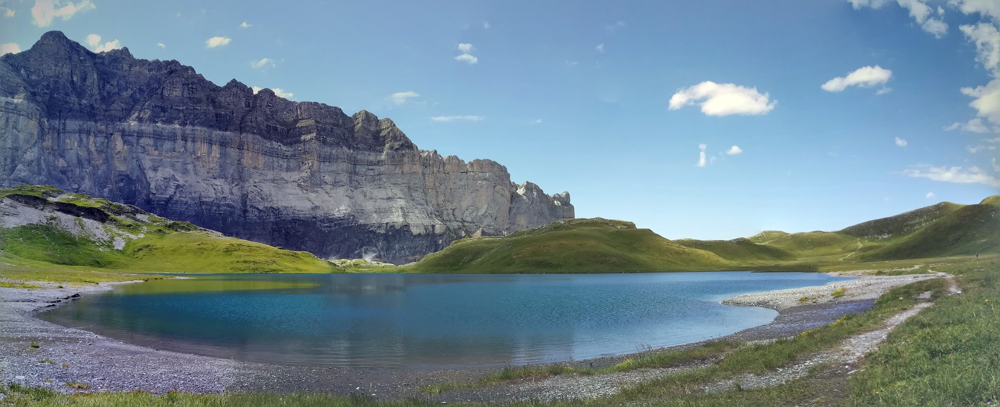

Apart from physics my other passions are sports and mountains. I starting running long time ago. Since then I have completed several races: 15 km, half marathon, marathon. However I prefer running in the mountains but it's not always possible when you are living in a big city. I have also completed several trailrunning races from 15 km to Maxi-Race (86 km with 5400 D+). During sunny days in summer I use my free time to go hiking in the mountains enjoying the views.